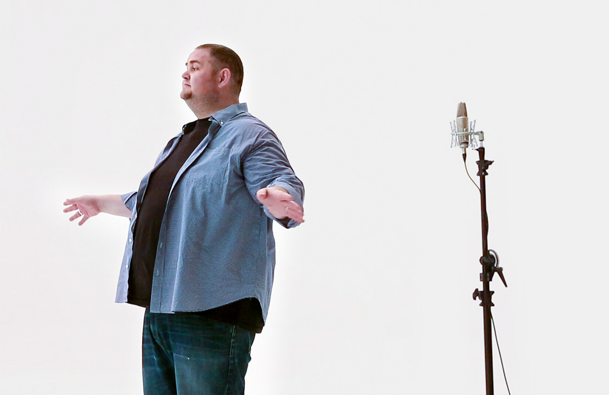
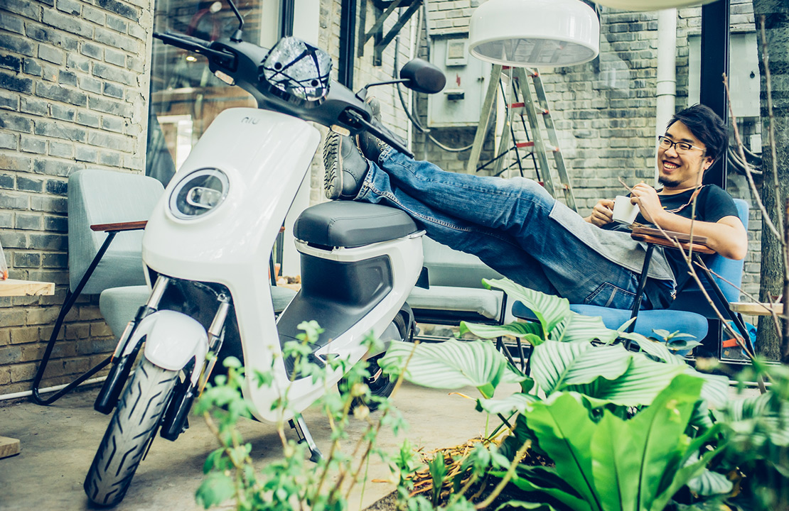
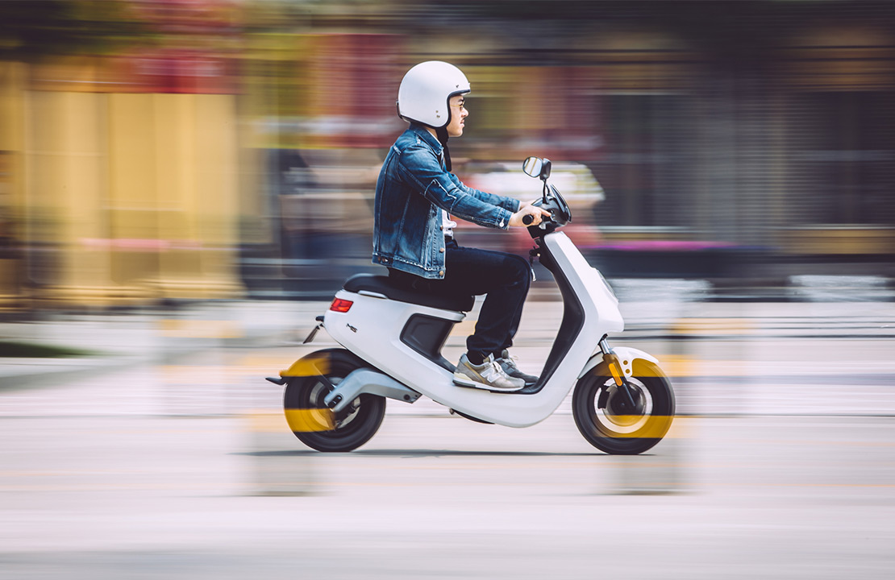
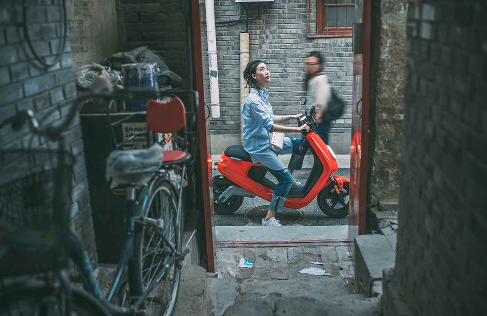
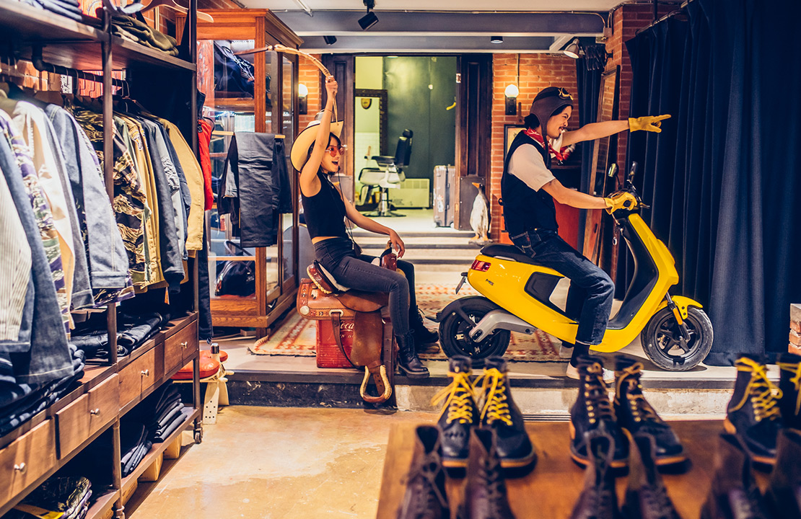
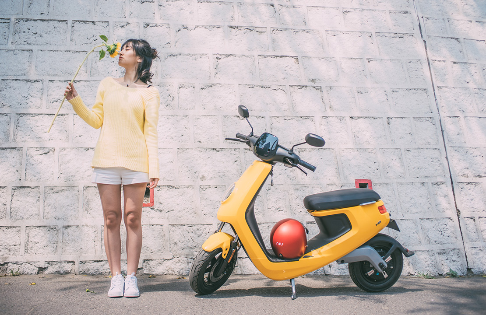
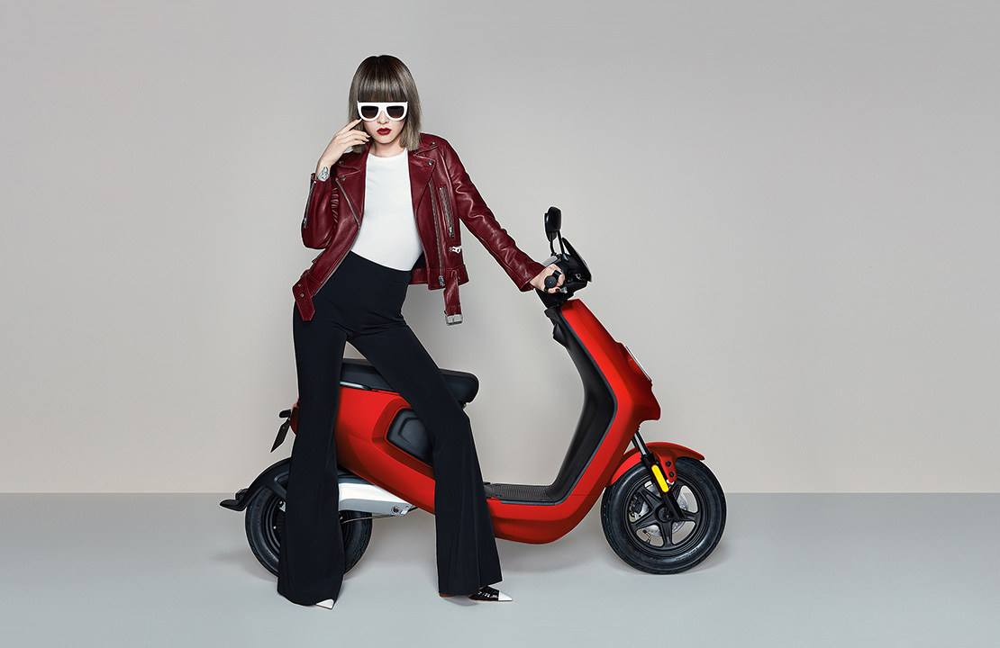
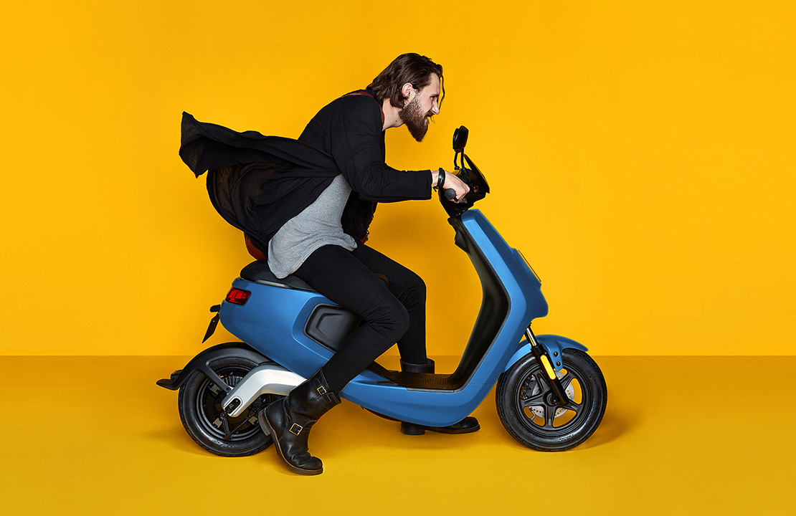
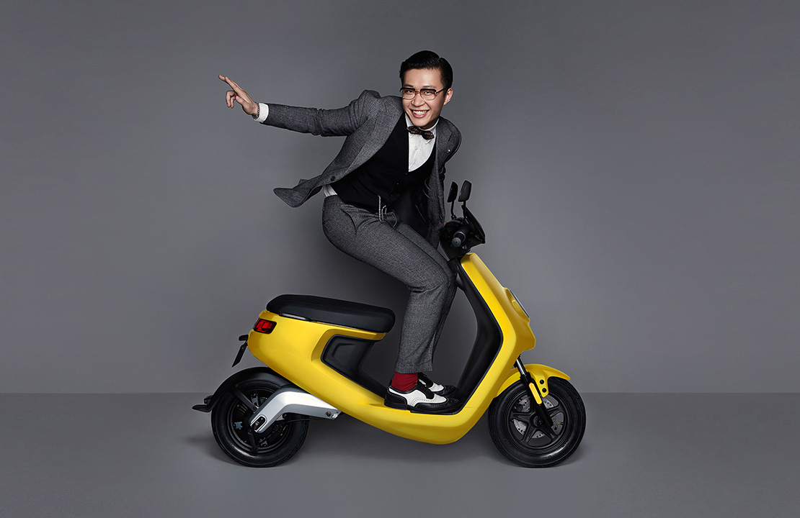

-
ARTIST
NIU x 音乐制作人 大龙
音乐人与工程师的跨界创作
去年合作也算是一种缘分吧。经过朋友的介绍，找到了我为小牛新品首发的广告作曲。沟通了广告创意之后，很喜欢那样的宣传手法，加上车又很帅，当时很有动力把这件事做得很好，于是我们开始了第一次合作。到了今年，小牛再次问我是否愿意第二次合作，我说：“废话，肯定啊！”小牛的宣传方式在我看来一直很有创意，我会很好奇今年小牛会怎么玩。
六月 20 2016 了解更多 -

-
FRIENDS
NIU x 皮具匠人 刘师尧
精心打磨过的东西一定可以被感知
最早我是个画画的，后来机缘巧合做了摇滚乐队的经纪人。慢慢地认识人多了，我也有了做一件自己的事情的想法——手工皮具。我是个很注重细节的人，生命里没有“快餐”。我热爱一切精心打磨出来的精致的东西，对于这份工作，我乐在其中。其实M1也算是志同道合的一款产品，因为被精心打磨过的东西是有温度的，你使用的时候就会感觉到，皮具是这样，M1亦然。
六月 20 2016 了解更多 -
-
FRIENDS
NIU x 老师 刘南男
胡同穿梭的无数种可能
每天穿过胡同去给孩子们上课是我最期待的事。胡同里的氛围让我感觉很真实，晒太阳笑眯眯的老奶奶和凑上来聊天的小朋友。他们很喜欢我车的颜色和样子，总会凑上来问。驾驶技术不算太好的我也可以轻松地穿越每一个胡同，时间充裕的时候我甚至可以探索未知的路线，意外发现新奇的小店，买点喜欢的小东西回家。我的生活圈子不再是以前那样固定了，我开始有时间和好奇心去探索在这个城市的新大陆了。
六月 20 2016 了解更多 -

-
FRIENDS
NIU x 古着店店员 大海
我与我的大玩具
我在798上班，园区很大，游客很多。因为M1的轻巧，即使路线很曲折，只要有一点小空不用按喇叭就可以灵活的穿过缓慢而庞大的人流，中午出门买点东西也不会耽误太多时间。加上它的设计，简约还透着一些科技感，把车停在店里，跟所有我爱的大玩具一起，感觉也算是一种收藏。
六月 20 2016 了解更多 -
FRIENDS
NIU x 公司职员 Kris
千万种北京生活中的一种
早上可以8点半起床，把堵车的时间拿来多睡半小时。中午溜去五公里外最爱的餐厅，吃完在暖暖的阳光里发一会儿呆。顺便买一束花插在办公室的花瓶里。时间变得更充裕，工作之外的生活可以变的更悠闲。
六月 20 2016 了解更多FRIENDSNIU x 时尚造型师 小白
知道自己需要什么很重要
我叫小白，是个造型师，因为还在上学的时候，参加了一个街拍比赛得了奖，又因为去了趟时装周，变得小有名气。大学毕业后就来到北京签约了旅游卫视，做了第一时尚的造型师，一路走来还算顺利。
六月 20 2016 了解更多 -
FRIENDS
NIU x 外籍模特 NAZZAR
音乐人与工程师的跨界创作
我来自乌克兰，现在还在念书。因为从小就有环游世界的梦想，类似的话也听别人说起过，但是大多数都只是说说，很多人连第一步都没有踏出过。我害怕自己也变成那个样子，觉得自己需要马上行动起来。于是趁着假期来到不同的国家，像这次这样，而且我会在当地找一份工作来维持我的生活，自己用努力撑起的...
六月 20 2016 了解更多 -
